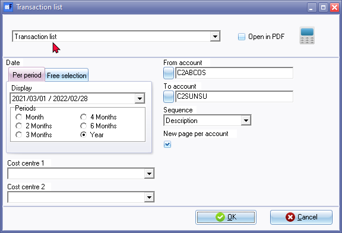
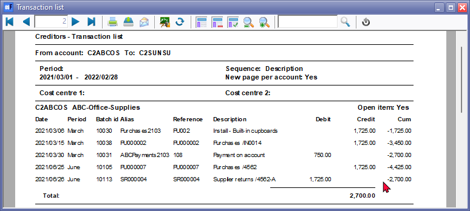

Creditors - Transaction list reports (Reports menu)
The following two (2) reports may be printed:
- Creditors - Transaction list - This report lists all the transactions in documents and batches which are posted (updated) to the ledger. All transactions will be listed irrespective of open item links.
- Creditors - Transaction list - Open item - This report lists only those outstanding transactions in documents and batches which are posted (updated) to the ledger. If a creditor (supplier / vendor) account is set as Open item account (Creditors - Accounting information tab), it will list only those transactions with outstanding amounts. Any debit amounts, which are not linked to credit transactions, should be processed in Open item link (Default ribbon).
|
|
These reports does not include any opening balances. |

|
|
This report only includes batch and document transactions which are posted. Unposted batches and documents will be NOT be included in this report. To view a list of unposted batches and documents, which is not updated to the ledger, go to Input → Checking unposted items (Default ribbon). |

Creditors - Transactions list report options
To print Creditor transactions List reports:
- On the Reports ribbon, select Reports → Creditors → Transactions.
- Select "Transaction List" or "Transaction List - Open item".

- Select the following options:
- Period - Select a period on the Per period tab. You may click on the Free selection tab to select a specific date or a range of dates to include transactions in the report.
- From account / To account - Select a creditor (supplier / vendor) account or a range of creditor (supplier / vendor) accounts, to include in the report.
- Sequence - Select "Creditor code" to print the report by account code or "Description" to print the report by account description (name).
- New page per account - If this option is selected (ticked), it will print the transactions for each account on a new page.
|
|
The Company details will not be printed as in the Page header. The company name is displayed in the Page footer. |
- Cost centre 1 / 2 - If you have activated Cost centres, you may select the Cost centres.
- Click on the OK button.
Printed : Creditors - Transaction list report
The "Creditors - Transaction list" report" will list all the transactions, whether debit batch transactions or supplier return documents is linked to credit batch transactions and purchase documents, or not.

Printed : Creditor - transactions - Open item report
The "Creditors - Transaction list - Open item" report will list only the outstanding amounts and all transactions for which batch transactions or supplier return documents is not linked to credit batch transactions and purchase documents.

|
|
The debit transactions which are linked to specific credit transactions of the same value, will not be displayed. If a transaction of a different amount is linked to a specific transaction, only the outstanding amount (difference) will be listed.
For example:
The outstanding amount for this transaction is 975.00 still due to the creditor (supplier / vendor). (1725.00 minus 750.00). Only 975.00 will be listed. |

|
|
If the transaction for Supplier return SR000004 is not linked to Purchase PU000007, both Supplier return SR000004 and Purchase PU000007, will be listed on the "Transaction list - Open item" report as well as the "Creditor remittance advise - Outstanding".
You may need to process the links on the Open item link (Default ribbon). |
The details on the report, is as follows:
- Page header 1 - Company details - This will only print on the fist page.
|
|
If the "New page per account" option on the report parameters is selected (ticked), the Company details will not be printed in the Page header of the first page. The company name is displayed in the Page footer of all pages. |
- Page header 2 - Report name and Parameters as selected on the Report options will display below the Company details on the first page and at the top of each subsequent page.
- Header group - The Account code and Name (description). It also displays if the creditor (supplier / vendor) account is an open item account.
- Detail - List the transaction details for each account.
- Reference - The reference number of the document (i.e. Purchases and Supplier returns) or the reference number entered in the reference column on the Batch entry screen.
- Date - The date of the transaction or document.
- Description - The stock item code or the account description (if the Financial entry stock item type was selected on a document) of the document (i.e. Purchases and Supplier returns) or the description entered in the description column on the Batch entry screen.
- Debit - The debit transaction amount.
- Credit - The credit transaction amount.
- Cum - The accumulative total of the transactions included in the account.
- Footer - Groups - Total / Balance - Displays the total of the transactions and the closing balance for each account.
- Page Footer - List the following:
- Data - Name of the Set of Books and the full path of the Set of Books (e.g. ...\books\BOOKSNAME\Books.fdb)
- System user and osFinancials user (Setup → Access control).
- Printed: The date and time of the system (computer) on which the report is printed.
- Page: Page number and the last page number of the report.